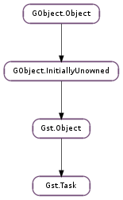

| static | cleanup_all() |
| static | new(func, *user_data) |
| get_pool() | |
| get_state() | |
| join() | |
| pause() | |
| set_enter_callback(enter_func, *user_data) | |
| set_leave_callback(leave_func, *user_data) | |
| set_lock(mutex) | |
| set_pool(pool) | |
| set_state(state) | |
| start() | |
| stop() |
None
None
| Name | Type | Access |
|---|---|---|
| cond | GLib.Cond | r |
| object | Gst.Object | r |
| running | bool | r |
| state | Gst.TaskState | r |
| thread | GLib.Thread | r |
Bases: Gst.Object
Gst.Task is used by Gst.Element and Gst.Pad to provide the data passing threads in a Gst.Pipeline.
A Gst.Pad will typically start a Gst.Task to push or pull data to/from the peer pads. Most source elements start a Gst.Task to push data. In some cases a demuxer element can start a Gst.Task to pull data from a peer element. This is typically done when the demuxer can perform random access on the upstream peer element for improved performance.
Although convenience functions exist on Gst.Pad to start/pause/stop tasks, it might sometimes be needed to create a Gst.Task manually if it is not related to a Gst.Pad.
Before the Gst.Task can be run, it needs a GLib.RecMutex that can be set with Gst.Task.set_lock ().
The task can be started, paused and stopped with Gst.Task.start (), Gst.Task.pause () and Gst.Task.stop () respectively or with the Gst.Task.set_state () function.
A Gst.Task will repeatedly call the Gst.TaskFunction with the user data that was provided when creating the task with Gst.Task.new (). While calling the function it will acquire the provided lock. The provided lock is released when the task pauses or stops.
Stopping a task with Gst.Task.stop () will not immediately make sure the task is not running anymore. Use Gst.Task.join () to make sure the task is completely stopped and the thread is stopped.
After creating a Gst.Task, use Gst.Object.unref () to free its resources. This can only be done when the task is not running anymore.
Task functions can send a Gst.Message to send out-of-band data to the application. The application can receive messages from the Gst.Bus in its mainloop.
For debugging purposes, the task will configure its object name as the thread name on Linux. Please note that the object name should be configured before the task is started; changing the object name after the task has been started, has no effect on the thread name.
Last reviewed on 2012-03-29 (0.11.3)
Wait for all tasks to be stopped. This is mainly used internally to ensure proper cleanup of internal data structures in test suites.
MT safe.
| Parameters: |
|
|---|---|
| Returns: | A new Gst.Task. MT safe. |
| Return type: |
Create a new Task that will repeatedly call the provided func with user_data as a parameter. Typically the task will run in a new thread.
The function cannot be changed after the task has been created. You must create a new Gst.Task to change the function.
This function will not yet create and start a thread. Use Gst.Task.start () or Gst.Task.pause () to create and start the GLib.Thread.
Before the task can be used, a GLib.RecMutex must be configured using the Gst.Task.set_lock () function. This lock will always be acquired while func is called.
| Returns: | the Gst.TaskPool used by task. Gst.Object.unref () after usage. |
|---|---|
| Return type: | Gst.TaskPool |
Get the Gst.TaskPool that this task will use for its streaming threads.
MT safe.
| Returns: | The Gst.TaskState of the task MT safe. |
|---|---|
| Return type: | Gst.TaskState |
Get the current state of the task.
| Returns: | True if the task could be joined. MT safe. |
|---|---|
| Return type: | bool |
Joins task. After this call, it is safe to unref the task and clean up the lock set with Gst.Task.set_lock ().
The task will automatically be stopped with this call.
This function cannot be called from within a task function as this would cause a deadlock. The function will detect this and print a g_warning.
| Returns: | True if the task could be paused. MT safe. |
|---|---|
| Return type: | bool |
Pauses task. This method can also be called on a task in the stopped state, in which case a thread will be started and will remain in the paused state. This function does not wait for the task to complete the paused state.
| Parameters: |
|
|---|
Call enter_func when the task function of task is entered. user_data will be passed to enter_func and notify will be called when user_data is no longer referenced.
| Parameters: |
|
|---|
Call leave_func when the task function of task is left. user_data will be passed to leave_func and notify will be called when user_data is no longer referenced.
| Parameters: | mutex (GLib.RecMutex) – The GLib.RecMutex to use |
|---|
Set the mutex used by the task. The mutex will be acquired before calling the Gst.TaskFunction.
This function has to be called before calling Gst.Task.pause () or Gst.Task.start ().
MT safe.
| Parameters: | pool (Gst.TaskPool) – a Gst.TaskPool |
|---|
Set pool as the new Gst.TaskPool for task. Any new streaming threads that will be created by task will now use pool.
MT safe.
| Parameters: | state (Gst.TaskState) – the new task state |
|---|---|
| Returns: | True if the state could be changed. |
| Return type: | bool |
Sets the state of task to state.
The task must have a lock associated with it using Gst.Task.set_lock () when going to Gst.TaskState.STARTED or Gst.TaskState.PAUSED or this function will return False.
MT safe.
| Returns: | True if the task could be started. MT safe. |
|---|---|
| Return type: | bool |
Starts task. The task must have a lock associated with it using Gst.Task.set_lock () or this function will return False.
| Returns: | True if the task could be stopped. MT safe. |
|---|---|
| Return type: | bool |
Stops task. This method merely schedules the task to stop and will not wait for the task to have completely stopped. Use Gst.Task.join () to stop and wait for completion.